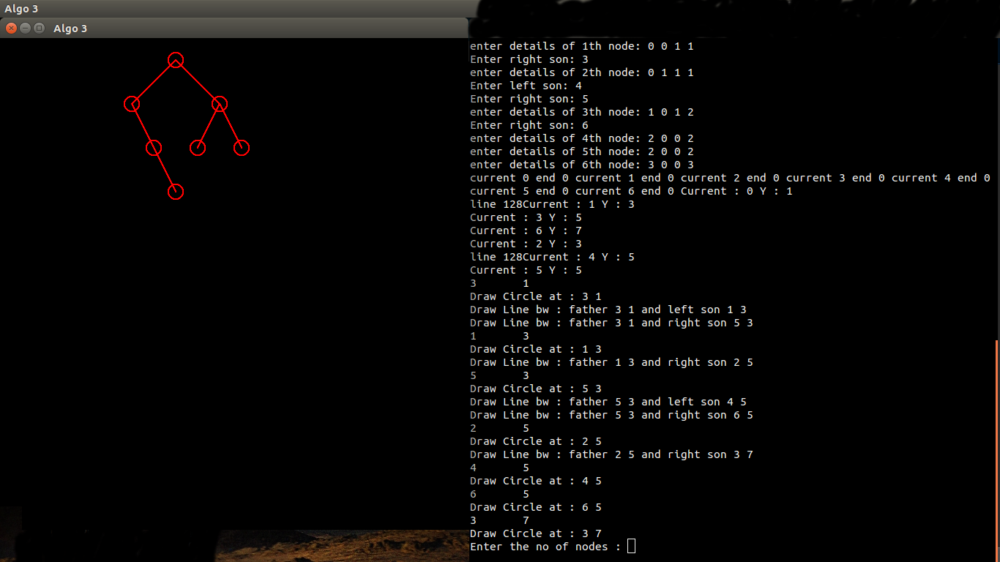

The algorith follows three aesthtic rules that are to be considered while tree drawing. In a first post-order walk, every node of the tree is assigned a preliminary x-coordinate(held in a field of x). In addition, internal nodes are given modifier's which will later be used used to movetheir sons right. During a second pre-order walk, each node is a given a final x-coordinate by summing its preliminary x-coordinate and the modifier's of all the node's ancestors. The y-coordinate depends, as before, on the height of the node.
states that the nodes that are on the same level(i.e have the same height) should be in a straight line, and the lines defining the levels should be parallel.
states, that in a binary tree, a left son should be posi-tioned left of its father and each right son right of its father.
states that a parent should be centered over its children.
Variables used :
Variables used inside the Structure(tree)
It accepts to values 0 and 1.True(=1) means left son exists for the given node else False(=0)
It accepts to values 0 and 1.True(=1) means left son exists for the given node else False(=0)
The index of the left child of the current node
The index of the right child of the current node
Used to calculate the value of x
Gives the height of the node
The x value of node as calculated
The y value of node as calculated
The index value of father
The status value of node as calculated/assigned
The variable useful for break condition
An example case
 Right side is the terminal where you input the details, the output is seen in the left side window